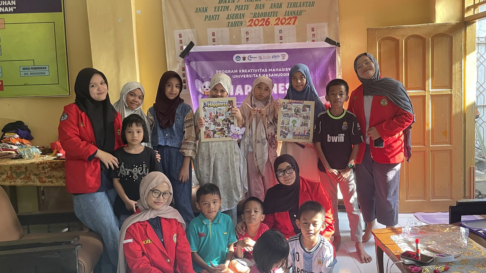

Lokasi Kami
Jl. Sunu, Lorong 1-B, No. 17,
Bontoala, Makassar,
Sulawesi Selatan, 90152,
Indonesia

Mari belajar dan abadikan momen bersama. Portofolio digital yang merekam setiap langkah, pelajaran, dan karya terbaik.

"Setiap perjalanan memiliki cerita.
Ada proses untuk mengenal, belajar, bertumbuh, dan menemukan kebahagiaan di
dalamnya.
Inilah perjalanan saya, yang terangkum dalam setiap karya dan pengalaman."
Jl. Sunu, Lorong 1-B, No. 17,
Bontoala, Makassar,
Sulawesi Selatan, 90152,
Indonesia